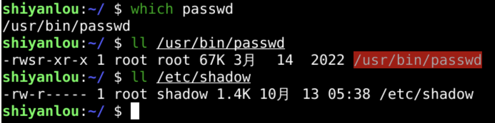
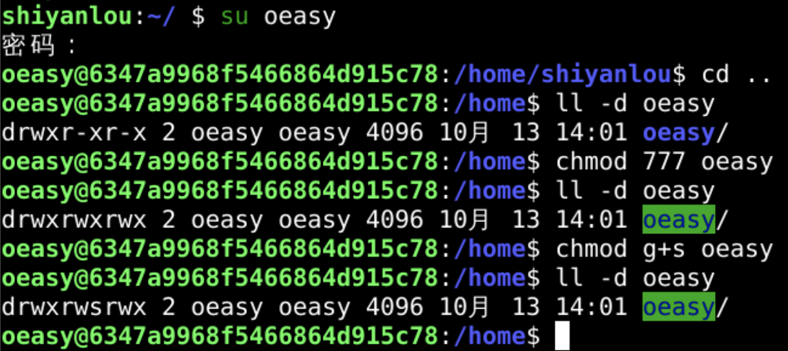
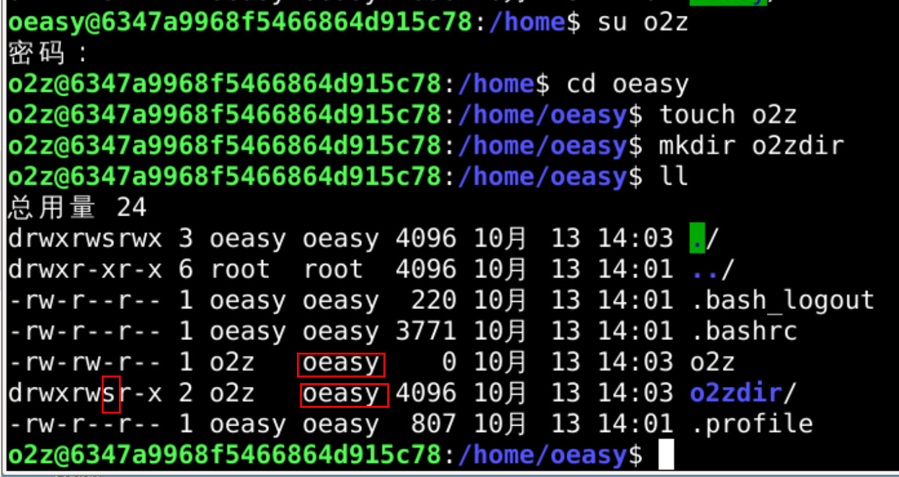
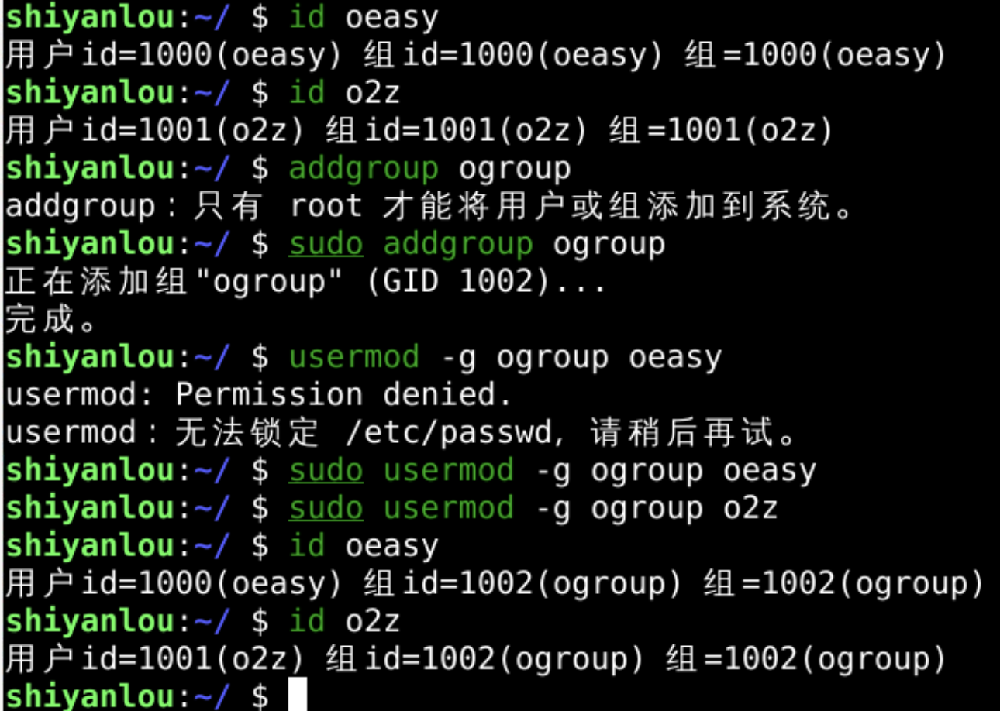
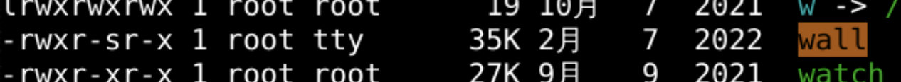

先准备好
两个用户
一个组

并把oeasy和o2z的默认远程登录组设置为ogroup

| mode | 说明 |
|---|---|
| S_IRWXU | 用户(所有者)读、写、执行 |
| S_IRUSR | 用户(所有者)读 |
| S_IRWUSR | 用户(所有者)写 |
| S_IRXUSR | 用户(所有者)执行 |
| S_IRWXG | 用户组读、写、执行 |
| S_IRGRP | 用户组读 |
| S_IWGRP | 用户组写 |
| S_IXGRP | 用户组执行 |
| S_IRWXO | 其他读、写、执行 |
| S_IROTH | 其他读 |
| S_IWOTH | 其他写 |
| S_IXOTH | 其他执行 |
| S_ISUID | 执行时设置用户id |
| S_ISGID | 执行时设置用户组id |